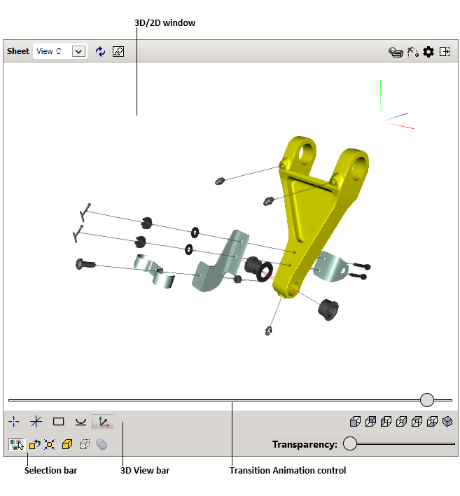

) per passare da una finestra all’altra.
) per passare da una finestra all’altra.
L'interfaccia utente dell’illustrazione interattiva contiene due aree di lavoro: 3D e 2D. Ogni area di lavoro ha i propri elementi di controllo descritti di seguito. Tutti i colori utilizzati per l'interfaccia utente in questo documento sono i colori predefiniti.
L'illustrazione può essere rappresentata come segue:
) per passare da una finestra all’altra.
|  |
La finestra 3D visualizza un'immagine 3D del foglio corrente. È possibile navigare nella finestra 3D utilizzando il mouse o la tastiera. Un localizzatore (treppiede) nell'angolo superiore destro della finestra 3D consente di determinare l'orientamento del modello 3D rispetto agli assi.
La finestra 2D visualizza immagini vettoriali e raster associate al foglio corrente.
| Interfaccia utente | Pulsante | Finalità |
|---|---|---|
| Superficie | Consente di selezionare il foglio di dettaglio da un elenco di fogli disponibili. | |
| Ripristina |

|
Ripristina la vista originale sul foglio corrente. |
| Grafica 2D |
|
Consente di passare tra le finestre 2D e 3D. Il pulsante è disponibile solo nella modalità di visualizzazione 2D e 3D. |
| Stampa grafica |

|
Consente di stampare l'immagine 3D/2D corrente come visualizzata nella finestra 3D/2D. |
| Ignora trasparenza (per finestra 3D) |

|
Se abilitato, consente di fare clic sugli item trasparenti nella finestra 3D, quando gli elementi trasparenti diventano insensibili al clic dell'utente. |
| Ripristina tutto (per finestra 3D) |

|
Mostra tutti gli oggetti nascosti e semitrasparenti. |
| Ignora animazione (per finestra 3D) |

|
Se abilitato, consente di evitare una transizione graduale (animazione) da una superficie all'altra e rende istantanea la transizione tra le superfici. |
| Impostazioni |

|
Mostra o nasconde l'elenco Impostazioni. Velocità di transizione animazione. Regola la velocità di riproduzione per la transizione della vista esplosa. Attiva Controllo animazione transizione. Se selezionata, attiva il dispositivo di scorrimento che consente di rivedere manualmente le transizioni tra i fogli. Per visualizzare il dispositivo di scorrimento, spostare il puntatore del mouse sulla parte inferiore della finestra 3D o toccarlo se si dispone di un touchscreen. Illuminazione scena. Definisce il numero e la posizione delle sorgenti di luce per illuminare il modello nella finestra 3D. Le posizioni relative delle sorgenti di luce vengono visualizzate a destra dell'elenco. Tutte le sorgenti di luce si spostano con il visualizzatore. Mostra cubo di navigazione. Mostra o nasconde il Cubo di navigazione nella finestra 3D. Il Cubo di navigazione ha tre diversi tipi di aree hotspot: Spigolo, Vertice e Faccia. Quando si posiziona il puntatore sul bordo, sul vertice o sulla faccia del Cubo di navigazione, viene evidenziata l'area corrispondente. Con queste aree è possibile passare da una vista standard all'altra ed eseguire rotazioni. Mostra spigoli superficie. Se selezionata, visualizza i contorni della superficie nella finestra 3D. Antialiasing. Attiva una tecnica per ridurre al minimo gli elementi di distorsione nella finestra 3D. Occlusione ambientale. Attiva la tecnica di rendering e ombreggiatura dell'occlusione ambientale nella finestra 3D. Modalità di selezione. Specifica la rappresentazione degli oggetti per la selezione nella finestra 3D. Evidenzia con colore: viene evidenziata la selezione. Oggetti selezionati a raggi X: gli oggetti appaiono in grigio e traslucidi, ad eccezione della selezione. Shell traslucida: il guscio esterno dell'intero modello appare trasparente, mentre gli oggetti interni non selezionati vengono nascosti. Contorno degli oggetti al passaggio del mouse. La selezione viene contornata. |
| Guida |

|
Fornisce una Guida per l'interfaccia utente. |
| Evidenziazione |
Quando si seleziona o si punta un item nella finestra 3D o un callout nella finestra 2D, questo viene evidenziato. Lo schema di colore può essere modificato dall'autore dell’illustrazione. Il seguente schema di colore viene applicato per impostazione predefinita:
Giallo: per l'item selezionato. Verde: per il callout puntato. |
Pulsanti per il controllo delle modalità di visualizzazione nella finestra 3D.
| Interfaccia utente | Pulsante | Finalità |
|---|---|---|
| Imposta centro |

|
Consente di specificare il centro di rotazione per il modello 3D. |
| Mostra centro di rotazione |

|
Consente di nascondere o visualizzare il centro di rotazione. |
| Includi tutto |

|
Rende l'intero modello 3D completamente visibile nella finestra 3D. |
| Allinea orizzonte |

|
Posiziona l'asse orizzontale (ma non longitudinale) della telecamera parallelamente al piano orizzontale nel sistema di coordinate. |
| Mostra assi delle coordinate |

|
Mostra o nasconde gli assi di orientamento nella finestra 3D. |
| Misura |

|
Apre lo strumento per misurare una distanza. Nella finestra 3D è sufficiente fare clic una volta su un punto, quindi fare nuovamente clic sul secondo punto. Dopodiché dovrebbe essere visualizzata la distanza tra i due punti rossi. Per ottenere la distanza tra i punti proiettati sul piano verticale o orizzontale, selezionare il nome del piano di proiezione dall'elenco. Per modificare l'unità di lunghezza, selezionare Unità. Per impostare la lunghezza delle linee direttrici, trascinare il dispositivo di scorrimento H. Selezionare Mantieni visibile per rendere visibile la linea di quota dopo la chiusura dello strumento di misurazione. Per impostare nuovi punti, fare clic su Cancella o premere il tasto Esc, quindi specificare i punti nella finestra 3D.
AVVISO Non utilizzare i risultati di misurazione direttamente nel workflow poiché l'illustrazione 3D potrebbe differire dal prodotto effettivo. Per ottenere le quote necessarie per la produzione o l'assistenza, fare riferimento alla documentazione tecnica pertinente. |
| Piano di sezione |

|
Visualizza il modello come se fosse tagliato da un piano. Utilizzare i controlli per impostare (Sinistra, In alto, Davanti) e ruotare (X e Y) il piano di sezione. Per spostare il piano di sezione, trascinare il dispositivo di scorrimento D. Utilizzare Ribalta per riflettere la sezione. Selezionare la Modalità Precisa per migliorare la precisione dei cursori. Selezionare Mantieni visibile per rendere visibile la sezione dopo la chiusura dello strumento. Per spostare il piano di sezione al centro della selezione, fare clic su Ripristina. |
Esistono diverse modalità di visualizzazione che consentono di mostrare il modello 3D da una posizione specificata:
| Interfaccia utente | Pulsante | Finalità |
|---|---|---|
| Anteriore |

|
Mostra il modello frontalmente. |
| Posteriore |

|
Mostra il modello dalla parte posteriore. |
| Sinistra |

|
Mostra il modello dal lato sinistro. |
| Destra |

|
Mostra il modello dal lato destro. |
| Superiore |

|
Mostra il modello dall'alto. |
| Inferiore |

|
Mostra il modello dal basso. |
| Isometrica |

|
Mostra il modello in una vista isometrica. |
Consente di adattare, mostrare, nascondere e rendere trasparenti gli item selezionati nella finestra 3D.
| Interfaccia utente | Finalità |
|---|---|
| Mostra oggetti selezionati in una finestra separata | Se abilitato, visualizza la selezione nella finestra 3D secondaria. |
| Ignora trasparenza | Se abilitato, consente di fare clic sugli item trasparenti nella finestra 3D, quando gli item trasparenti diventano insensibili al clic dell'utente. |
| Ripristina tutto | Mostra tutti gli oggetti nascosti e semitrasparenti. |
| Adatta | Adatta il riquadro di delimitazione degli item selezionati alla finestra 3D. |
| Mostra | Rende visibili gli item selezionati precedentemente nascosti nella finestra 3D. |
| Nascondi | Nasconde gli item selezionati nella finestra 3D. |
| Nessuna selezione | Deseleziona tutti gli item. |
| Trasparenza | Consente di impostare il valore di trasparenza per gli item selezionati. Il comando Trasparenza è disponibile se uno o più item sono selezionati nella finestra 3D. |
Fare clic con il pulsante destro del mouse nella finestra per accedere ai menu sensibili al contesto.
| Interfaccia utente | Significato |
|---|---|
| Mostra tutto | Rende visibili tutti gli item nascosti nella finestra 3D. |
| Ingrandisci | Aumenta l'immagine. |
| Rimpicciolisci | Riduce l'immagine. |
| Adatta | Adatta l'immagine ai margini. |
| Guida | Fornisce una Guida per l'interfaccia utente. |
| Informazioni | Mostra le versioni della pubblicazione, il visualizzatore 3D e il visualizzatore 2D. |
Fare clic con il pulsante destro del mouse nella finestra 2D per accedere ai comandi sensibili al contesto disponibili.
| Operazione | Azione dell'utente |
|---|---|
| Selezionare un callout item | Fare clic sul callout desiderato. |
| Sposta | Spostare il mouse tenendo premuto il pulsante sinistro. |
| Zoom | Scorrere la rotella del mouse in avanti o indietro. |
| Operazione | Azione dell'utente |
|---|---|
| Selezionare un oggetto | Fare clic sull'item desiderato. |
| Selezionare molti item uno alla volta | Tenere premuto il tasto CTRL e fare clic su ogni item 3D desiderato. |
| Ingrandimento/Riduzione | Scorrere la rotella del mouse in avanti o indietro. Sui computer Apple, utilizzare il tasto modificatore Ctrl. |
| Sposta | Spostare il mouse con la rotella del mouse premuta. Sui computer Apple, utilizzare il tasto modificatore Opzione. |
| Rotazione | Spostare il mouse tenendo premuto il pulsante sinistro. |
| Impostare il centro di rotazione |
Nella barra Vista 3D, fare clic su Imposta centro , quindi fare clic sull'item richiesto nella finestra 3D.
In alternativa, tenendo premuto il tasto ALT, fare clic su qualsiasi item nella finestra 3D. |
| Adatta modello 3D |
Sulla barra Vista 3D, fare clic su Adatta .
|
| Adatta item selezionati | Selezionare uno o più item necessari nella finestra 3D o nella tabella DPL, quindi fare clic su Adatta nella barra di selezione. |
| Mostra modello 3D dalla posizione specificata |
Sulla barra Vista 3D, fare clic sul pulsante richiesto ( Anteriore, Posteriore, Sinistra, Destra, Superiore, Inferiore e Isometrica).
|
| Nascondi/Mostra un gruppo di item | Tenere premuto il tasto CTRL, fare clic su ogni item 3D desiderato, quindi utilizzare i pulsanti Nascondi e Mostra sulla barra di selezione. |
| Imposta trasparenza/opacità | Selezionare l'item desiderato nella finestra 3D, quindi trascinare il dispositivo di scorrimento della trasparenza sulla barra di selezione, fino a ottenere l'effetto desiderato nella finestra 3D. |